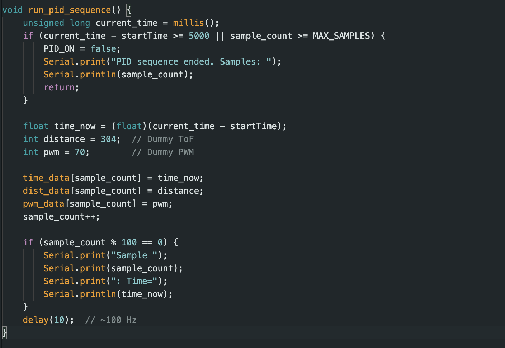
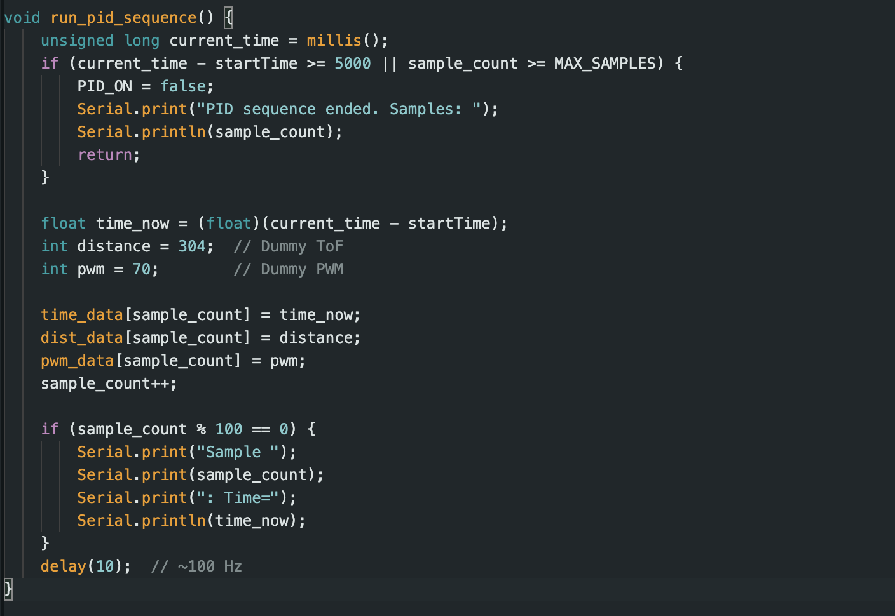
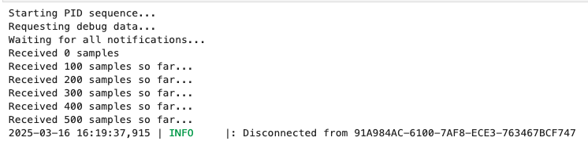
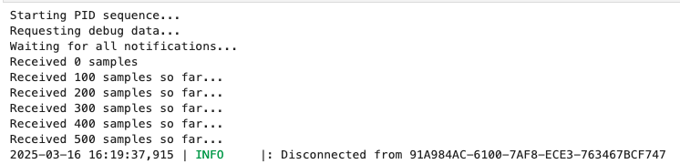

I implemented Bluetooth Low Energy (BLE) communication between the Artemis board and a Python script to send commands and receive data. Using the code from lab 2 and 3 as a starting point, I added new Robot commands for PID Control. Using previous code from lab 3, I made sure my sensors were still working by serial printing the values returned by the front tof sensor.
By adding new commands for the PID control, I could communicate via ble with the board and get the tof sensor for pid control and manipulation.
 

This allowed me to just tune and get the data from my RC car withiut having to reupload the code everytime. Came in handy during debugging and turing the PID parameter during testing. Now I could have the board send via ble time, distance, pwm and error data. I setup a notification handler in jupyter notebook to parse the recieved data into different arrays for graphing and review.
 

To determine the sensor’s ranging time, I printed the time after each PID calculation, revealing a consistent 100 ms interval, corresponding to a sampling rate of 10 Hz. I explored the Pololu library to reduce this time, testing values below 100 ms, but found that faster settings significantly degraded the ToF sensor’s accuracy. Applying a low-pass filter to these faster readings could have mitigated noise, but it would introduce a delay, impairing the PID controller’s responsiveness. I also experimented with `setProximityIntegrationTime()`, but the default settings proved optimal for my system’s reliability and simplicity. Thus, I maintained the 100 ms ranging time to ensure accurate distance measurements.
The PID loop operates much faster, running at 2 ms intervals (500 Hz), as determined by printing the time in my main loop
From previous lab, I had set the minimim pwm to 80 but for this lab, with extra experimenting,

I found a deadband value of just outside 45. I incoporated this in my drive motor code as shown below.

To tune my PID system, I started by setting Kp, Ki, and Kd to zero. I then calculated a theoretical value for Kp and reduced it from this value until the system's oscillations became steady and overshoot was minimized. Next, I increased Ki until the steady-state error (the difference between the target and actual position) was eliminated. Finally, I increased Kd to reduce the amplitude of oscillations.
To avoid destroying my front mounted tof camera, i begubn the experiment by driving the rc robot into a softer box waller and later moved to a concrete wall when I felt confident on my kp PID value.

To set Kp, I considered the motor's input range (PWM values from 0 to 255), the range of the time-of-flight (TOF) sensor's output, and the desired response of the system. Kp must be scaled so that the maximum error multiplied by Kp does not exceed the motor's input range. For example, if the maximum error is large, Kp needs to be small to avoid exceeding the PWM limit.


The objective of this lab was to implement positional control using a PID controller, enabling the robot to drive toward a wall at maximum speed and stop precisely at 1 foot (304 mm) from it. The controller was designed to accommodate a wide range of starting distances, necessitating robust distance sensing. To achieve this, I configured the front mounted sensor in long-distance mode using `distanceSensor1.setDistanceModeLong()`, which enhanced the sensor’s range and provided faster readings, supporting initial distances from 2–4 meters( which was my test distance)
I began with a P-only controller, setting Kp = 0.063, Kd = 0.0, and Ki = 0.0, with a stop tolerance of 20 mm and a max PWM cap of 150 to prevent crashes. The kp values was inspired by previous reports so figured it would be a good safe spot to start with. This choice allowed the robot to move steadily toward the wall without immediate instability, stopping at 205 mm with a 99 mm overshoot. The absence of a derivative term (Kd = 0.0) led to significant momentum carryover, while Ki = 0.0 left a steady-state error. Introducing Kd = 0.2 with Kp = 0.069 in a prior test caused a crash, likely due to noise amplification. To address this, I adjusted to Kp = 0.05, Kd = 0.1 reduced the stop tolerance to 5 mm, and increased smoothing (alpha = 0.2) to stabilize the derivative term and minimize overshoot.
Note to self and TA: Need to resolder my gnd motor pin, came loose during testing.